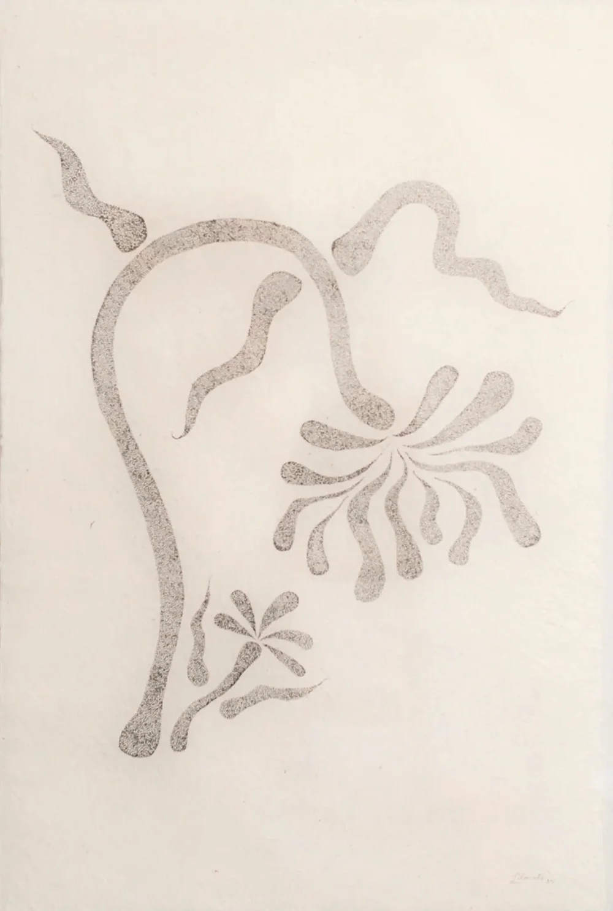

Blush Petal Stack
Muted greens and reds. The organic shapes and slightly uneven rims give each piece a natural, tactile quality, while the layered glazing creates subtle depth and variation. Playful yet delicate, it feels both functional and expressive - perfect for everyday use with an artisanal touch.


Each piece is shaped by hand, allowing for slight variations that make every cup unique. The surface decoration appears to be applied using a free, gestural technique, where pigments are brushed or dabbed onto the clay before firing. During the kiln process, the glazes melt and fuse into the surface, softening edges and creating the diffused, almost watercolour-like finish that gives the mug its character.